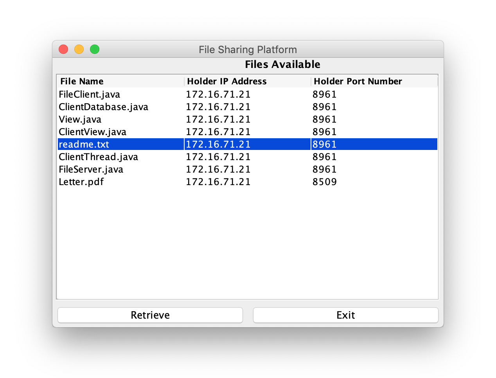
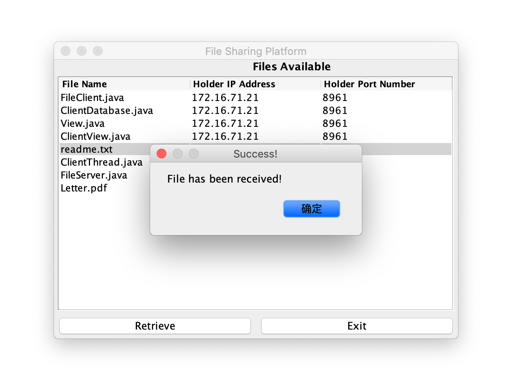
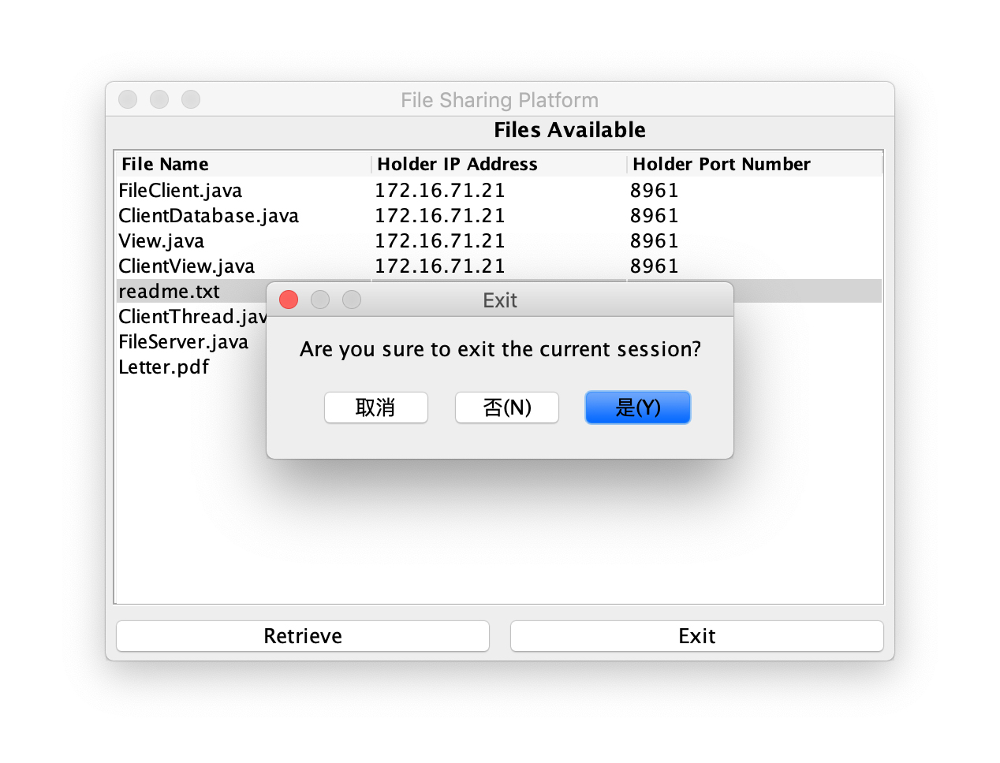

File Sharing Platform
Description
- Project in Computer Networking Course (CSE 3461) directed by Dave Ogle.
- Built a platform which supports file sharing among multiple users.
- The application will popup a file chooser when launched. The user can either choose one or more files to upload to the server or click cancel to skip this step.
- The application shows a table which contains all files available, IP addresses of files, and port numbers of files. The user can select at most one file in the table.
- There are two buttons at the bottom of the platform: "Retrieve" to download the selected file, and "Exit" to exit the program.
- The downloaded files will be saved in the same directory as the program is located.
- Server can accept connections from multiple clients. Multiple clients can have the same file, and server can handle cases when more multiple clients have the same file.
- Server deletes entries from list when a client disconnects from server.
- Used model-view-controller (MVC) architecture.
Screenshots

